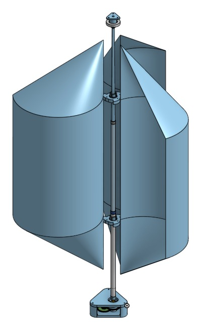
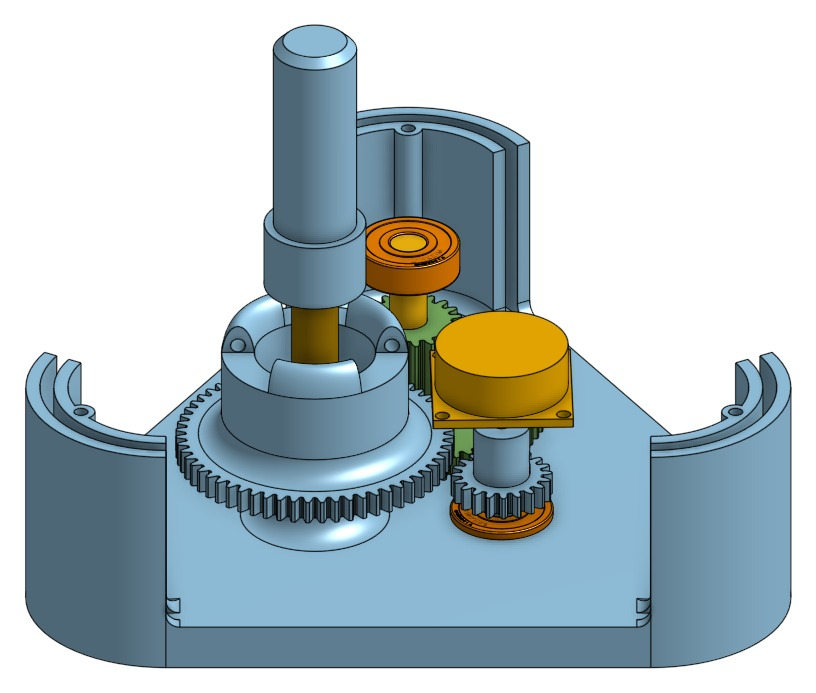
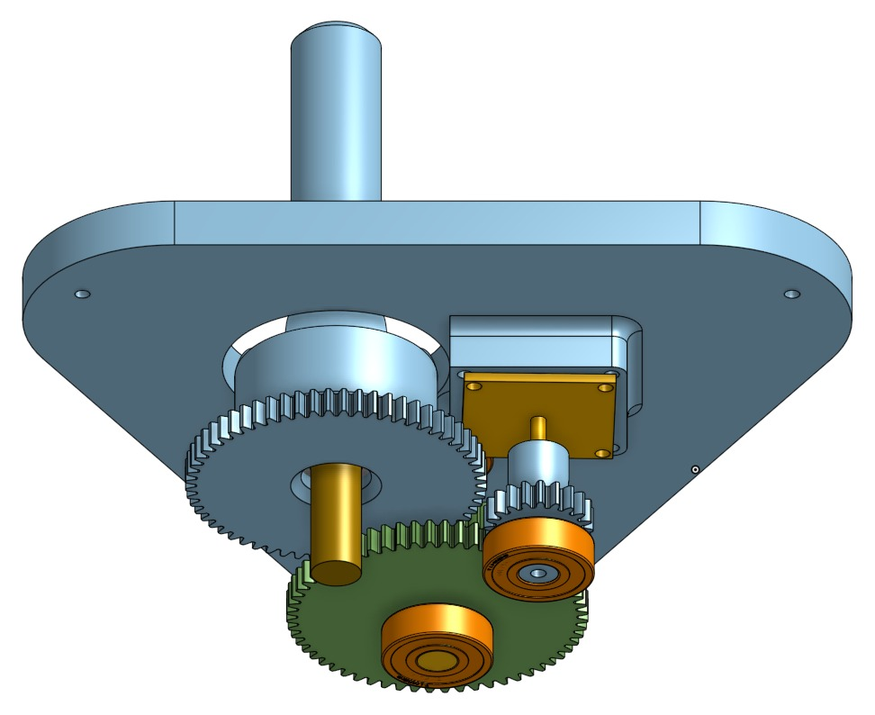

The Randolienne is a compact, toolless Savonius wind turbine designed for hikers to charge mobile phones on remote treks by mounting directly onto a standard hiking pole. To optimize aerodynamic efficiency and stability under heavy wind loads, we developed a fixed-pole architecture featuring three curved trapezoidal blades made of paraglider fabric, supported by a three-wire guy-line anchoring system.
To convert wind capture into usable electrical energy, we engineered a custom 3D-printed gear train with a 9.375:1 multiplier ratio to accelerate the rotor up to the generator's 1500 rpm threshold. Validated through wind tunnel testing, the finalized 1.190 kg prototype initiates rotation at 3 m/s, delivers a steady 5V phone-charging output at 6 m/s, and withstands winds up to 12 m/s — all with a toolless setup time of just 8 minutes.
Here you can see the Randolienne in action, and follow the wind speed on the anemometer.
A fast assembly (and disassembly) system that uses a hiking stick as the main axis, foldable wings and lightweight 3D-printed components.
CAD renders of the gear train and generator housing.


